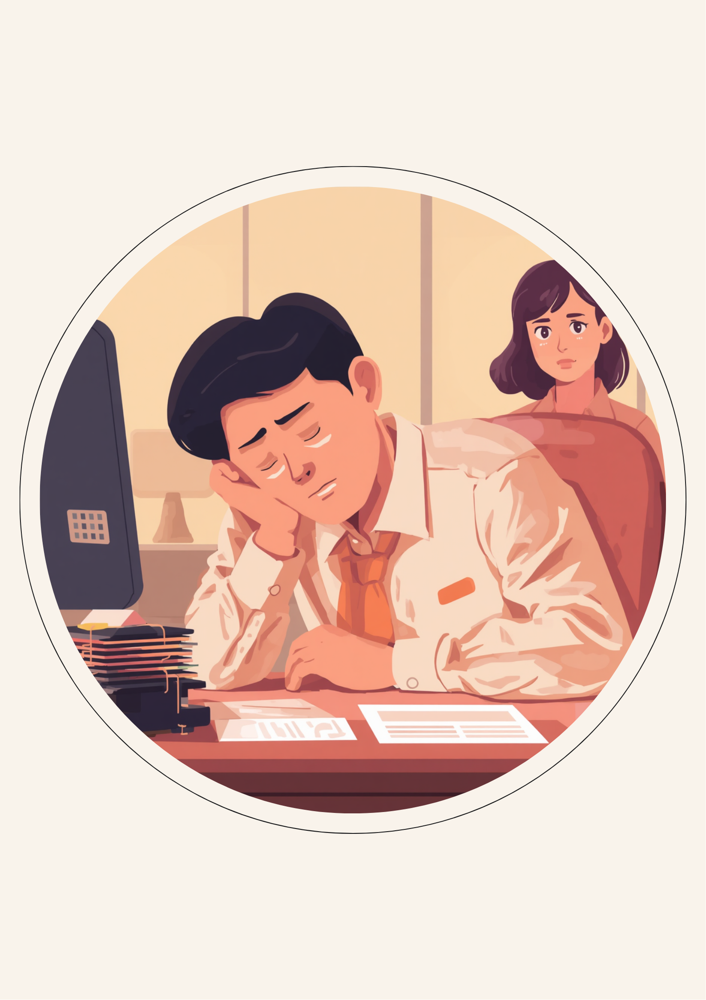

「怠けてる」に見えてしまう、陰性症状の疲れやすさ
就労支援の現場で関わってきた中で、統合失調症のある方から何度も聞いてきた言葉があります。「前はできていたことが、なぜかできなくなる時期がある」というものです。陰性症状は、幻聴や妄想のようにはっきり分かる症状ではなく、意欲の低下や疲れやすさという、誰にでもありそうな形で現れます。だからこそ周囲には「調子が悪い」ではなく「やる気がない」と映ってしまいやすいのだと思います。
本人にとっても、この状態はやっかいです。頭では「やらなければ」と分かっていても、体がついてこない。動けない自分を見て、余計に自分を責めてしまう。そうしているうちに、職場では「最近覇気がないね」と声をかけられ、その一言でさらに動けなくなる、という悪循環に陥りやすいようです。
「正直言うと、調子が落ちてるときの自分が一番嫌いでした。工場のラインで働いてるんですけど、動きが遅くなって、上司に『やる気あるのか』って言われたことがあって。あの時は本当に頭が真っ白になりました。やる気がないんじゃなくて、体が鉛みたいに重くて動かないだけなのに、それを説明する気力すらなかったんです。結局その日は早退させてもらいました。」
「めちゃくちゃ落ち込んだ時期があって、半年くらい書類のミスが増えたんです。周りは『前はもっとしっかりしてたのに』って言い方をしてきて、傷つきましたね。でも実際は薬の調整をしている時期で、頭がぼんやりして集中できなかっただけなんです。誰にも言えずに一人で抱えてたのが一番きつかったかもしれません。」
1日の中にもある、しんどさが強くなるタイミング
陰性症状による疲れやすさは、1日中ずっと同じ重さで続くわけではないという声をよく聞きます。朝は比較的落ち着いていても、会議が続いたあとや、昼休み明けの時間帯に急に重くなる。逆に夕方になると少し持ち直す、という波があることも多いようです。この波を本人があらかじめ把握しておくと、負荷が集中しやすい時間帯だけでも対策を考えやすくなります。
特に昼休み明けの時間帯にしんどさが集中しやすいという声は多く、午前中に力を使い切ってしまった反動が出やすいのかもしれません。このタイミングであえて負荷の軽い作業を入れてもらう、休憩をこまめに挟むなど、あらかじめ工夫できることもあります。
服薬をしている場合、薬の効き方や調整の時期によっても、疲れやすさの出方が変わることがあります。「最近ミスが増えた」「反応が遅くなった」と感じたときは、生活リズムだけでなく服薬状況も含めて主治医と相談してみると、原因が見えてくることがあります。
説明しすぎず、具体的な場面に絞って伝えるという方法
陰性症状のしんどさを職場に伝えるとき、多くの方が悩むのが「どこまで説明すればいいのか」という点です。病名や症状の詳細をすべて話す必要はないとされています。むしろ業務に関わる具体的な場面に絞って伝えたほうが、周囲にも実践しやすい配慮として伝わりやすいという声があります。
場面を絞って伝えるという考え方
「やる気がない」という誤解を解くには、症状の説明よりも、具体的にどうしてほしいかを伝えるほうが伝わりやすいことがあります。
- 「昼休み明けは反応が遅くなることがあるので、急ぎでない作業を回してもらえると助かります」
- 「体調の波があり、調子が落ちる日もあります。そういう日は声をかけてもらえると嬉しいです」
- 「怠けているわけではなく、通院・服薬をしながら働いています」
- 「調子が悪そうに見えても、無理に理由を聞かずそっとしておいてもらえると助かります」
一方で、伝えすぎることで「大丈夫?」と過剰に心配され続けるのも、それはそれで疲れてしまうという声もあります。「調子が悪そうなときは、理由を聞かずそっとしておいてほしい」という希望も、遠慮せず伝えていい内容です。
「開示するかどうか、3ヶ月くらい悩みました。結局、直属の上司にだけ話したんですけど、意外と『そうだったんだ、教えてくれてありがとう』って言われて拍子抜けしたのを覚えてます。あんなに悩んだのに、話してみたら数分で終わりました。もちろん相手によると思うので、誰にでもおすすめできる方法ではないんですけどね。」
使える制度と、一人で抱えないための相談先
精神障害者保健福祉手帳という選択肢
統合失調症は、精神障害者保健福祉手帳の対象になり得る疾患です。等級は症状の程度や日常生活・社会生活への影響によって異なるため、詳しくは主治医や自治体の障害福祉窓口に確認するのが確実です（2026年8月時点の情報です）。手帳を取得すると、障害者雇用枠での就職や、業務量の調整といった合理的配慮を前提にした働き方を選びやすくなる場合があります。
相談できる窓口
- 主治医・精神科（症状の記録や、働き方についての意見書の相談）
- 職場に選任されている産業医（50人以上の事業場に選任義務あり）
- 自治体の障害福祉窓口、精神障害者保健福祉手帳の相談窓口
- 就労移行支援事業所（体調管理を含めた就労準備や職場との調整）
よくある質問
関連記事
mimemime代表。就労支援の現場経験をもとに、障がいのある方の働く不安に寄り添う記事を執筆。